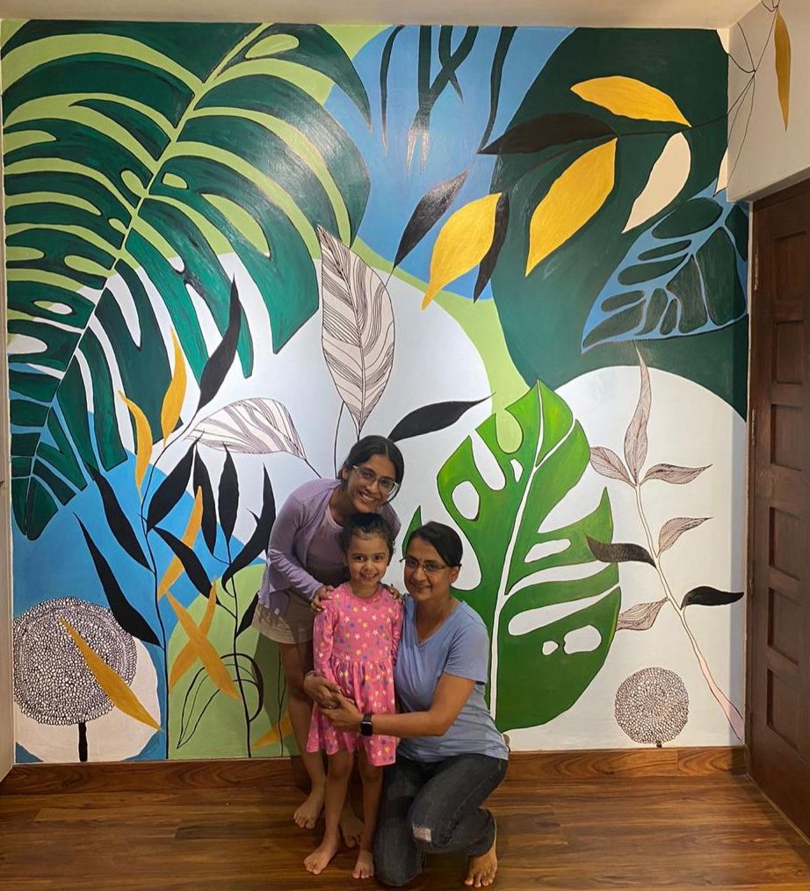
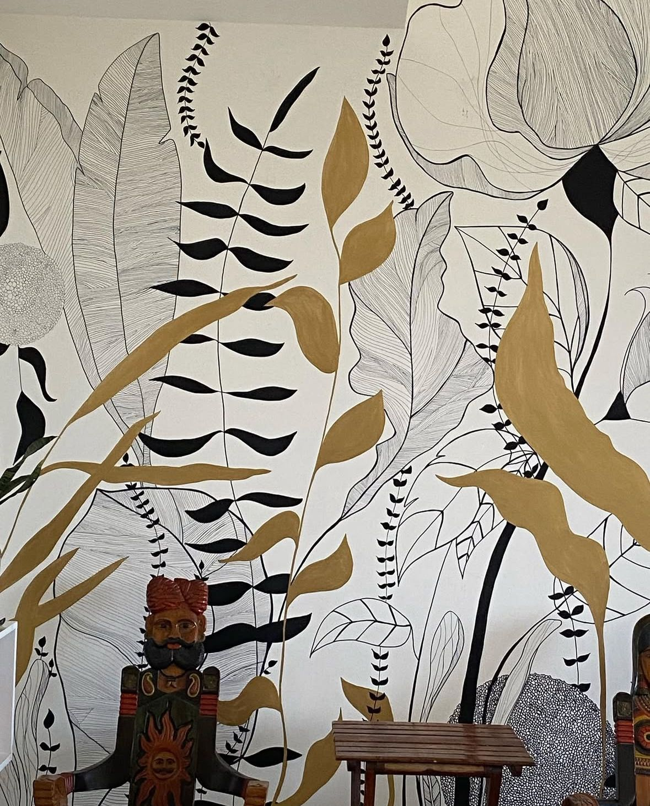
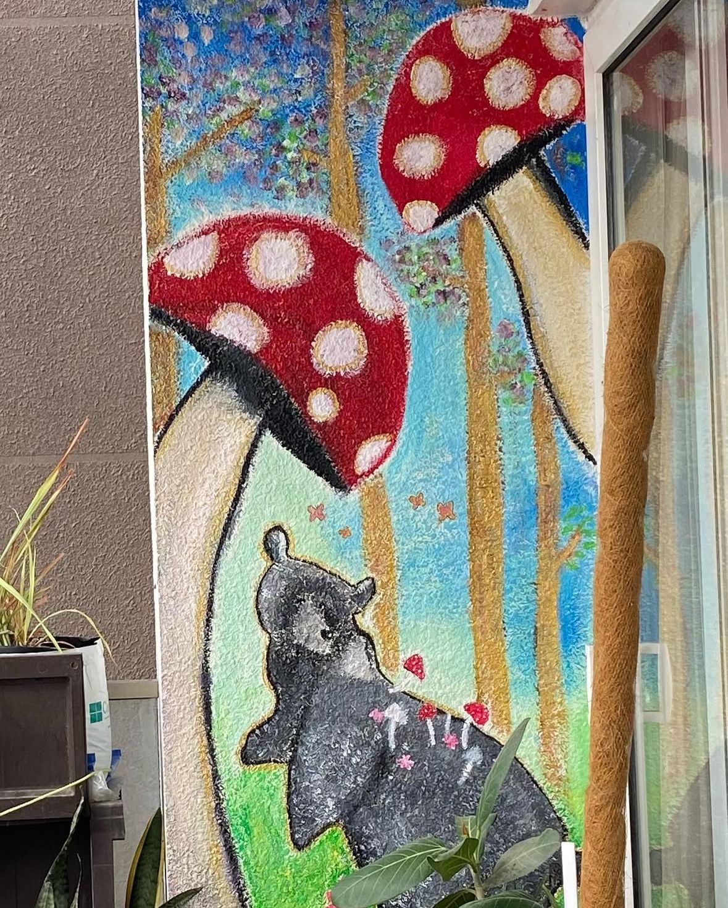
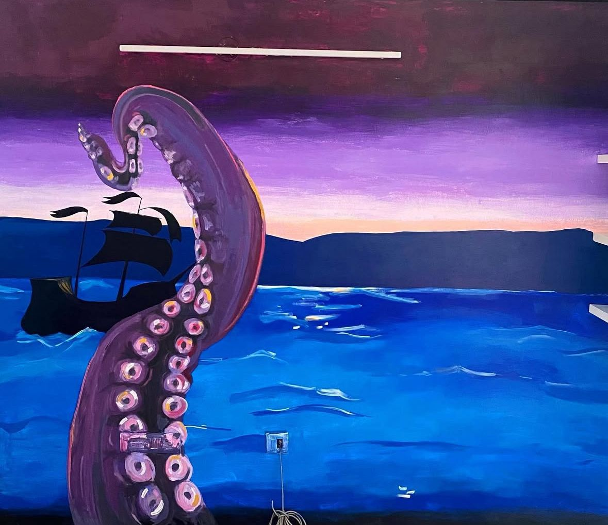

Public Murals
Art that lives with the community.

Acrylic on Interior Wall
A living-room wall reimagined as a tropical canopy - monstera leaves in emerald and jade tangle with hand-inked botanical linework and warm mustard fronds. Painted over three days for a family who wanted their home to feel like walking into a garden.

Acrylic & Fine-Liner on Interior Wall
A quieter companion to The Bloom, done almost entirely in linework - fine contour leaves and looping vines drawn straight onto the wall, with only a few fronds filled in solid mustard to keep the eye moving.

Exterior Acrylic & Weather-Resistant Sealant
A textured woodland scene for an outdoor balcony wall, with oversized toadstools and a curious little bear rendered in a soft, storybook palette - sealed against sun and rain so the forest stays this vivid year-round.

Acrylic & Spray Paint
Commissioned for a private study, a single giant tentacle rises out of a violet dusk sea toward a ghost ship on the horizon - deep purple gradients and hard shadow turn one wall into its own sea sanctuary.